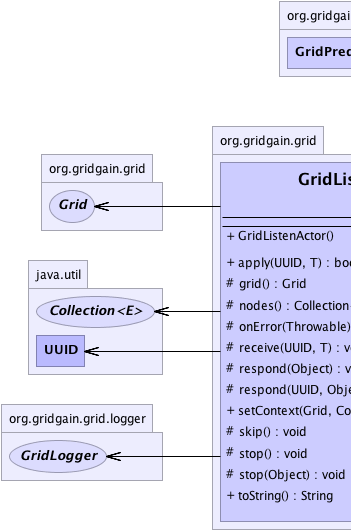
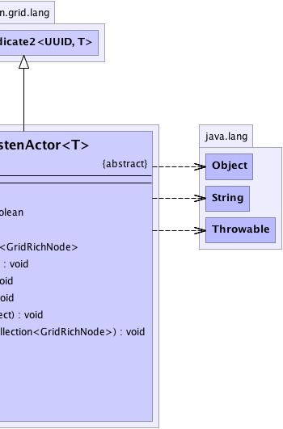

org.gridgain.grid.lang.GridMetadataAwareAdapter
org.gridgain.grid.lang.GridLambdaAdapter
org.gridgain.grid.lang.GridPredicate2<UUID,T>
org.gridgain.grid.GridListenActor<T>
org.gridgain.grid.lang.GridMetadataAwareAdapter
org.gridgain.grid.lang.GridLambdaAdapter
org.gridgain.grid.lang.GridPredicate2<UUID,T>
org.gridgain.grid.GridListenActor<T>
|
GridGain™ 3.6.0c
Community Edition |
|||||||||
| PREV CLASS NEXT CLASS | FRAMES NO FRAMES | |||||||||
| SUMMARY: NESTED | FIELD | CONSTR | METHOD | DETAIL: FIELD | CONSTR | METHOD | |||||||||
java.lang.Object
public abstract class GridListenActor<T>
Actor-base adapter for GridProjection.listen(GridPredicate2[])
method. Look at GridFunctionPingPong.java example class for usage sample.
| Wiki | |
| Forum |
|  |  |
| Constructor Summary | |
|---|---|
GridListenActor()
|
|
| Method Summary | |
|---|---|
boolean |
apply(UUID nodeId,
T rcvMsg)
Predicate body. |
protected Grid |
grid()
Gets grid instance associated with this actor. |
protected Collection<GridRichNode> |
nodes()
Gets collection of nodes this actor is listening on. |
protected void |
onError(Throwable e)
This method is called in case when method GridListenActor.receive(UUID, Object) threw an exception. |
protected abstract void |
receive(UUID nodeId,
T recvMsg)
This method receives the message. |
protected void |
respond(Object respMsg)
Responds to the original sender node with given message and continues to listen for the new messages. |
protected void |
respond(UUID id,
Object respMsg)
Responds to the provided node with given message and continues to listen for the new messages. |
void |
setContext(Grid grid,
Collection<GridRichNode> nodes)
Internal method that is called by GridGain runtime to set local context. |
protected void |
skip()
Skips current message and continues to listen for new message. |
protected void |
stop()
This method instructs underlying implementation to stop receiving new messages and unregister the message listener. |
protected void |
stop(Object respMsg)
This method sends the response message to the original sender node and instructs underlying implementation to stop receiving new messages and unregister the message listener. |
String |
toString()
|
| Methods inherited from class org.gridgain.grid.lang.GridPredicate2 |
|---|
andThen, andThen, andThen, curry, curry, uncurry3 |
| Methods inherited from class org.gridgain.grid.lang.GridLambdaAdapter |
|---|
classLoader, deployClass, peerDeployLike, withMeta |
| Methods inherited from class org.gridgain.grid.lang.GridMetadataAwareAdapter |
|---|
addMeta, addMetaIfAbsent, addMetaIfAbsent, allMeta, clone, copyMeta, copyMeta, hasMeta, hasMeta, meta, putMetaIfAbsent, putMetaIfAbsent, readExternalMeta, removeMeta, removeMeta, replaceMeta, writeExternalMeta |
| Methods inherited from class java.lang.Object |
|---|
equals, finalize, getClass, hashCode, notify, notifyAll, wait, wait, wait |
| Methods inherited from interface org.gridgain.grid.GridMetadataAware |
|---|
addMeta, addMetaIfAbsent, addMetaIfAbsent, allMeta, copyMeta, copyMeta, hasMeta, hasMeta, meta, putMetaIfAbsent, putMetaIfAbsent, removeMeta, removeMeta, replaceMeta |
| Constructor Detail |
|---|
public GridListenActor()
| Method Detail |
|---|
public final void setContext(Grid grid,
Collection<GridRichNode> nodes)
GridListenActor.receive(UUID, Object) is
called for the first time.
Note that this method is only public due to fucked up visibility support in Java...
grid - Local grid instance this actor belongs to.nodes - Collection of nodes this actor is listening to.protected final Grid grid()
protected final Collection<GridRichNode> nodes()
public final boolean apply(UUID nodeId,
T rcvMsg)
apply in class GridPredicate2<UUID,T>nodeId - First bound free variable, i.e. the element the closure is called or closed on.rcvMsg - Second bound free variable, i.e. the element the closure is called or closed on.
protected void onError(Throwable e)
GridListenActor.receive(UUID, Object) threw an exception.
Insides of this method the implementation should call any of the respond, stop
or skip methods. If overriding method does nothing - than return value of method
GridListenActor.receive(UUID, Object) is undefined.
Default implementation simply calls method GridListenActor.stop().
e - Exception thrown from method receive(UUID, Object).
protected abstract void receive(UUID nodeId,
T recvMsg)
throws Throwable
respond, stop
or skip methods. Note that if none of these methods are called - listener will continue
listen for the new messages.
Note that like all predicate in GridProjection.listen(GridPredicate2[]) method
this method is called in synchronized context so that only thread can access it at a time.
Throwable - Thrown in case of any errors. Method onError(Throwable)} will
be called right before returning from this method.nodeId - ID of the sender node.recvMsg - Received message.protected final void stop()
Note that subclasses can call any of respond, stop or skip methods any
number of times. Only the last executed method will determine whether or not the implementation will
continue listen for the new messages.
protected final void stop(@Nullable
Object respMsg)
throws GridException
Note that subclasses can call any of respond, stop or skip methods any
number of times. Only the last executed method will determine whether or not the implementation will
continue listen for the new messages.
GridException - Thrown in case of any errors.respMsg - Optional response message. If not null - it will be sent to the original
sender node.protected final void skip()
respond(null).
Note that subclasses can call any of respond, stop or skip methods any
number of times. Only the last executed method will determine whether or not the implementation will
continue listen for the new messages.
protected final void respond(@Nullable
Object respMsg)
throws GridException
Note that subclasses can call any of respond, stop or skip methods any
number of times. Only the last executed method will determine whether or not the implementation will
continue listen for the new messages.
GridException - Thrown in case of any errors.respMsg - Optional response message. If not null - it will be sent to the original
sender node.
protected final void respond(UUID id,
@Nullable
Object respMsg)
throws GridException
Note that subclasses can call any of respond, stop or skip methods any
number of times. Only the last executed method will determine whether or not the implementation will
continue listen for the new messages.
GridException - Thrown in case of any errors.id - ID of the node to send the message to, if any.respMsg - Optional response message. If not null - it will be sent to the original
sender node.public String toString()
toString in class Object
|
GridGain™ 3.6.0c
Community Edition |
|||||||||
| PREV CLASS NEXT CLASS | FRAMES NO FRAMES | |||||||||
| SUMMARY: NESTED | FIELD | CONSTR | METHOD | DETAIL: FIELD | CONSTR | METHOD | |||||||||
|
GridGain - Real Time Big Data
|
|

|
|